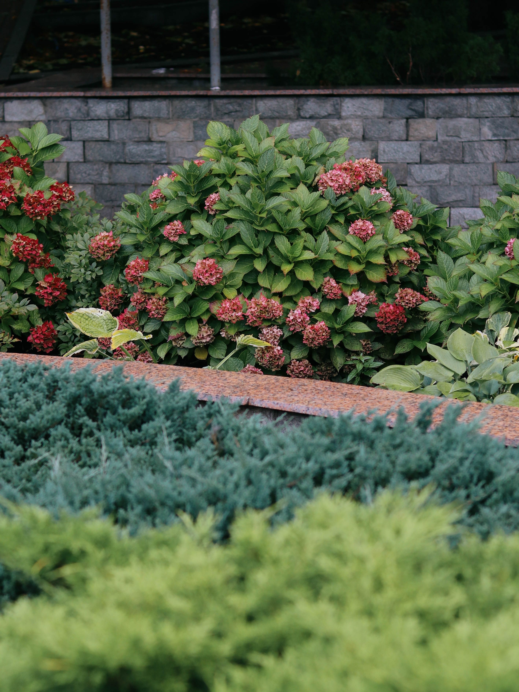
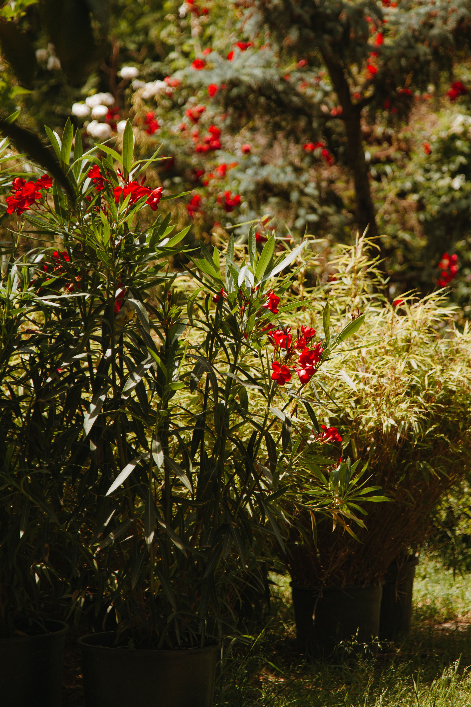

In This Article
- Introduction
- Review the Garden Before the Season Changes
- Manage Fallen Leaves and Protect the Soil
- Adjust Watering and Pruning for Autumn
- Plan Planting and Cold Protection
- Tasks That Can Wait and Tasks That Cannot
- Maintain Results Over Time
- Frequently Asked Questions
- Create an Autumn Garden Checklist
- Create an Autumn Garden Checklist
- Create an Autumn Garden Checklist
- Create an Autumn Garden Checklist
- Create an Autumn Garden Checklist
- Create an Autumn Garden Checklist
- Create an Autumn Garden Checklist
- Create an Autumn Garden Checklist
- Create an Autumn Garden Checklist
- Create an Autumn Garden Checklist
- Create an Autumn Garden Checklist
- Create an Autumn Garden Checklist
- Create an Autumn Garden Checklist
- Create an Autumn Garden Checklist
- Conclusion
Introduction
Preparing the garden for autumn is easier when the work begins with observation instead of a fixed calendar. Autumn can mean mild rain in one region and early frost in another, so soil, watering, leaves, pruning, planting, and cold protection should always be adapted to local conditions.
Walk through the garden before making changes. Look for damaged plants, compacted areas, drainage problems, empty spaces, unstable supports, and paths that may become slippery when leaves begin to fall.
Review the Garden Before the Season Changes
Autumn does not arrive in the same way everywhere. In some climates, temperatures remain mild for weeks; in others, frost can arrive quickly. Start by checking local conditions and short-term weather patterns.
Remove exhausted annuals and clearly diseased plant material. Healthy material may be composted when appropriate, while some diseased debris may need separate disposal so problems are not spread through a home compost system.
Inspect stakes, ties, and supports. Summer growth can leave ties too tight or structures unstable, and stronger autumn winds can increase pressure on plants and supports.
Check trees and shrubs for storm damage or large broken branches. If a branch may threaten people, buildings, or utility lines, use a qualified professional rather than attempting risky work.
Keep paths, steps, and edges clear. Wet leaves can make hard surfaces slippery, especially in shaded areas.
Create a short priority list. The goal is to keep the garden healthy and prepared for the next stage, not to remove every visible sign of seasonal change.
Manage Fallen Leaves and Protect the Soil
Fallen leaves can be useful organic material, but they need to be managed according to location. A thick, compacted layer on lawn can reduce light and airflow, while a moderate layer of healthy leaves in planting beds may provide useful cover.
When practical, leaves can be shredded so they decompose faster. Small pieces can return organic matter to the soil and are easier to use in compost or as a light mulch.
Healthy leaves can also be composted or used to make leaf mold. Avoid adding material that is clearly diseased when the pathogen may survive a typical home composting process.
Inspect existing mulch before adding more. Replenish only where needed and keep mulch away from trunks, stems, and crowns. Thick piles against tree trunks can trap moisture in places that should remain exposed to air.

If major garden changes are planned, autumn can be a useful time to test the soil. A proper test can provide information about pH and nutrient levels before fertilizers or amendments are applied unnecessarily.
Avoid working saturated soil. Walking or digging in very wet soil can increase compaction and damage structure, especially in clay-heavy areas.
On slopes or bare ground, vegetation and suitable mulch can help reduce erosion during seasonal rains.
Adjust Watering and Pruning for Autumn
Lower temperatures often reduce evaporation, but that does not mean watering should stop automatically. Newly planted trees, shrubs, and perennials may still need water if autumn is dry.
Adjust automatic irrigation according to rainfall, temperature, and soil moisture. Continuing a midsummer schedule during cooler weather can keep soil too wet and increase root problems.
Check moisture before watering instead of relying only on the calendar. A simple finger test in the upper soil or another suitable method can help prevent unnecessary irrigation.
Pruning also needs restraint. Many plants do not need heavy autumn pruning, and some dry stems add winter interest or shelter for wildlife.
Remove broken or dangerous branches when necessary, but check species-specific guidance before structural or renewal pruning. Shrubs that flower on old wood may lose the next season's flowers if pruned at the wrong time.
Clean tools before storage. Remove soil, dry metal parts, and inspect handles and mechanisms. Storing damp tools for months encourages corrosion.

If irrigation systems are exposed to freezing temperatures, follow local winterization procedures for pipes, hoses, and equipment. Complex systems may require professional service.
Plan Planting and Cold Protection
In many climates, autumn provides good conditions for planting trees, shrubs, and some perennials because the soil may remain warm while the air is cooler. The suitable planting window depends on the species and the expected arrival of severe cold.
Plant early enough for roots to begin establishing before extreme conditions. Water after planting and maintain appropriate moisture without creating waterlogged soil.
Spring-flowering bulbs are commonly planted in autumn in suitable climates. Follow species-specific guidance for planting depth, orientation, and local timing.
Container plants are often more vulnerable to cold because their roots have less insulation than plants growing in the ground. Moving pots to a sheltered area or adding suitable protection can help when it matches the plant's cold tolerance.
Avoid placing plastic directly against plant tissue during frost protection. Use appropriate materials and remove or ventilate covers when conditions improve.
Mark perennials that disappear completely in winter if their location could be forgotten. A simple label can prevent accidental damage during spring digging.
Take photographs of the garden in autumn. They provide a useful record of color, plant performance, gaps, and areas that may need adjustment next season.

Tasks That Can Wait and Tasks That Cannot
Not every task must be completed before the first leaves fall. Some planting and pruning decisions depend on climate and species, while certain decorative jobs can wait without consequence.
Dangerous branches, irrigation leaks, unstable supports, and blocked drainage deserve priority because storms and colder weather can make them worse.
Diseased plants should be diagnosed before they are heavily pruned or composted. Management depends on the specific problem.
If frost is common, identify container plants that need protection before a cold-night warning arrives. Planning in advance is safer than improvising at the last minute.
Check hoses and garden tools before freezing weather. Storing them clean and dry helps reduce deterioration and makes spring preparation easier.
Keep some healthy leaves for compost or mulch instead of treating all of them as waste.
At the end of the season, note which tasks were completed and which were delayed. This makes the next autumn easier to plan.
Maintain Results Over Time
After the main autumn tasks are complete, review the garden over the following weeks. Seasonal rain, wind, frost, and plant growth can reveal issues that were not obvious initially.
Record what worked and which tasks took more time than expected. This helps refine future maintenance without adding unnecessary work.
If a condition changes, such as persistent wet soil, a leaking irrigation line, or a plant becoming unstable, return to diagnosis before applying another solution.
Photographs from the same viewpoints can make seasonal comparison easier and show how plants and bare areas change over time.
Frequently Asked Questions
Should I remove all fallen leaves?
No. Remove thick layers from lawns and paths, but healthy leaves can often be composted or used as appropriate cover in planting areas.
Should I stop watering in autumn?
Not necessarily. Adjust watering according to rainfall, temperature, soil conditions, and the needs of each plant.
Should everything be pruned before winter?
No. Pruning time depends on the species, and many plants do not need heavy autumn pruning.
Can I plant trees in autumn?
In many climates, yes, provided the species is suitable and roots have time to begin establishing before severe conditions.
How should I protect container plants from cold?
Match protection to the plant's hardiness and local climate. Containers usually need more protection than plants in the ground.
Create an Autumn Garden Checklist
Divide the checklist into safety, irrigation, leaves, soil, planting, and cold protection. This makes it easier to finish urgent work first and postpone optional tasks without losing track of them.
Reuse the same checklist next year and update it with notes from the current season.
Create an Autumn Garden Checklist
Divide the checklist into safety, irrigation, leaves, soil, planting, and cold protection. This makes it easier to finish urgent work first and postpone optional tasks without losing track of them.
Reuse the same checklist next year and update it with notes from the current season.
Create an Autumn Garden Checklist
Divide the checklist into safety, irrigation, leaves, soil, planting, and cold protection. This makes it easier to finish urgent work first and postpone optional tasks without losing track of them.
Reuse the same checklist next year and update it with notes from the current season.
Create an Autumn Garden Checklist
Divide the checklist into safety, irrigation, leaves, soil, planting, and cold protection. This makes it easier to finish urgent work first and postpone optional tasks without losing track of them.
Reuse the same checklist next year and update it with notes from the current season.
Create an Autumn Garden Checklist
Divide the checklist into safety, irrigation, leaves, soil, planting, and cold protection. This makes it easier to finish urgent work first and postpone optional tasks without losing track of them.
Reuse the same checklist next year and update it with notes from the current season.
Create an Autumn Garden Checklist
Divide the checklist into safety, irrigation, leaves, soil, planting, and cold protection. This makes it easier to finish urgent work first and postpone optional tasks without losing track of them.
Reuse the same checklist next year and update it with notes from the current season.
Create an Autumn Garden Checklist
Divide the checklist into safety, irrigation, leaves, soil, planting, and cold protection. This makes it easier to finish urgent work first and postpone optional tasks without losing track of them.
Reuse the same checklist next year and update it with notes from the current season.
Create an Autumn Garden Checklist
Divide the checklist into safety, irrigation, leaves, soil, planting, and cold protection. This makes it easier to finish urgent work first and postpone optional tasks without losing track of them.
Reuse the same checklist next year and update it with notes from the current season.
Create an Autumn Garden Checklist
Divide the checklist into safety, irrigation, leaves, soil, planting, and cold protection. This makes it easier to finish urgent work first and postpone optional tasks without losing track of them.
Reuse the same checklist next year and update it with notes from the current season.
Create an Autumn Garden Checklist
Divide the checklist into safety, irrigation, leaves, soil, planting, and cold protection. This makes it easier to finish urgent work first and postpone optional tasks without losing track of them.
Reuse the same checklist next year and update it with notes from the current season.
Create an Autumn Garden Checklist
Divide the checklist into safety, irrigation, leaves, soil, planting, and cold protection. This makes it easier to finish urgent work first and postpone optional tasks without losing track of them.
Reuse the same checklist next year and update it with notes from the current season.
Create an Autumn Garden Checklist
Divide the checklist into safety, irrigation, leaves, soil, planting, and cold protection. This makes it easier to finish urgent work first and postpone optional tasks without losing track of them.
Reuse the same checklist next year and update it with notes from the current season.
Create an Autumn Garden Checklist
Divide the checklist into safety, irrigation, leaves, soil, planting, and cold protection. This makes it easier to finish urgent work first and postpone optional tasks without losing track of them.
Reuse the same checklist next year and update it with notes from the current season.
Create an Autumn Garden Checklist
Divide the checklist into safety, irrigation, leaves, soil, planting, and cold protection. This makes it easier to finish urgent work first and postpone optional tasks without losing track of them.
Reuse the same checklist next year and update it with notes from the current season.
Conclusion
Preparing the garden for autumn is much simpler when the work is divided into clear priorities. Start with inspection, correct safety issues first, then manage leaves, soil, watering, planting, and cold protection according to local climate and plant needs.
You do not need to complete every possible task in one day. Working in stages helps you observe results and avoid unnecessary work.